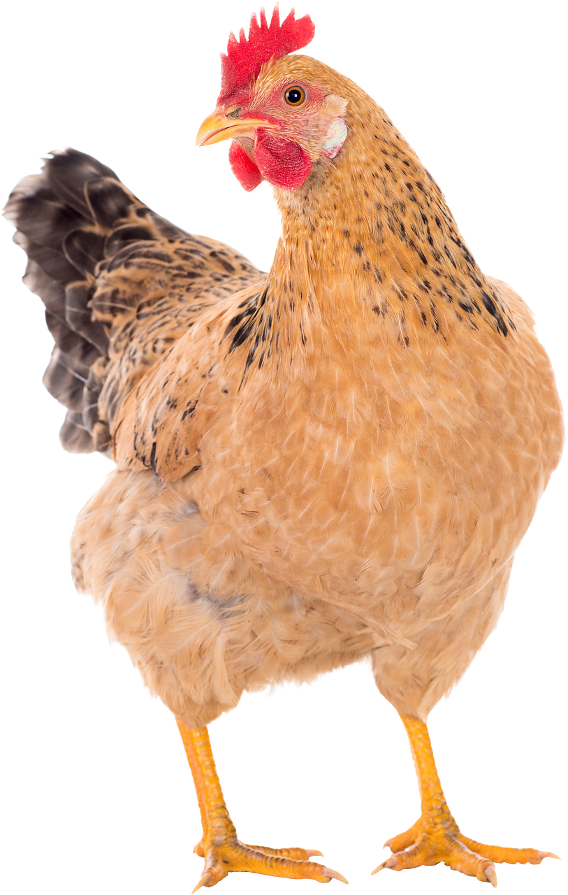

1000s AD
Indigenous tribes grew and processed cassava, yam and other tubers
16th Century
Jewish immigrants fleeing persecution integrated local ingredients
such as tayer root into their traditional recipes
17th century
Enslaved Africans created first pom dishes by using tubers,
coconut milk and meats
1860s to 1900s
After emancipation in 1863, freed Africans popularized and refined
the recipe
